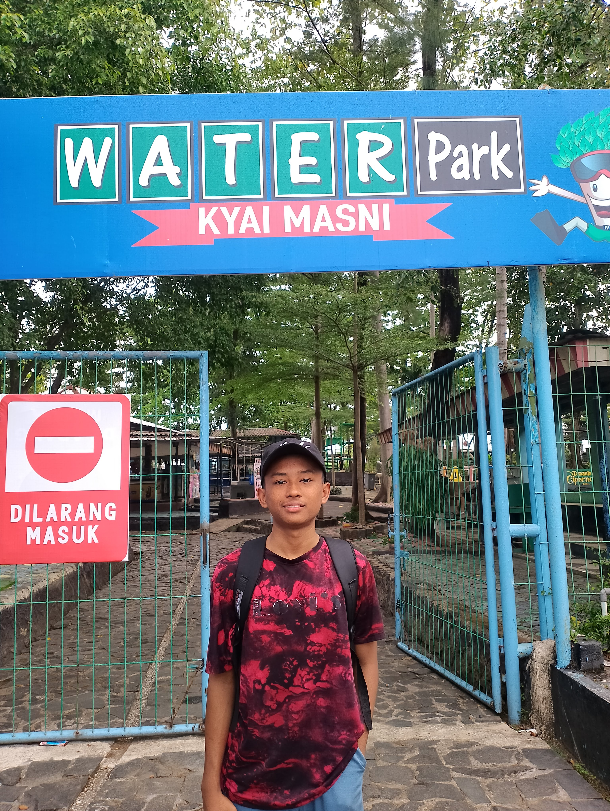

Siswa SMKN 1 Cirebon | Teknik Jaringan Komputer
Halo, perkenalkan nama saya Nur Dwi Nova Pramajaya. Saya adalah siswa kelas X TJKT 2 di SMK Negeri 1 Cirebon. Saya lahir di Kuningan pada tanggal 30 November 2009. Saat ini saya sedang menempuh pendidikan kejuruan dengan fokus utama pada Teknik Jaringan Komputer dan Telekomunikasi.
Saya memiliki ketertarikan yang besar terhadap dunia teknologi, khususnya bagaimana jaringan bekerja, cara konfigurasi perangkat, serta sistem komunikasi data. Saya memilih jurusan ini karena saya ingin memahami lebih dalam tentang dunia IT dan berharap suatu hari nanti bisa berkarier di bidang teknologi sebagai ahli jaringan atau tenaga profesional di bidang telekomunikasi.
Di sela-sela kesibukan belajar, saya memiliki hobi berlari. Bagi saya, berlari bukan hanya sekadar olahraga untuk menjaga kesehatan tubuh, tetapi juga sarana melatih kedisiplinan, ketahanan mental, dan semangat pantang menyerah. Prinsip hidup yang saya pegang adalah "Terus melangkah meski berat, sampai mencapai garis akhir". Prinsip ini selalu saya terapkan dalam segala hal, termasuk saat mengerjakan tugas sekolah maupun menghadapi tantangan baru.
Saya adalah pribadi yang ingin terus berkembang, suka belajar hal baru, dan mudah bergaul dengan siapa saja. Saya percaya bahwa dengan kerja keras, ketekunan, dan rasa ingin tahu yang tinggi, saya bisa meraih cita-cita saya dan menjadi orang yang berguna bagi keluarga, masyarakat, dan bangsa.
Terima kasih telah mengunjungi halaman profil saya. Jika ada keperluan, ingin berkenalan, atau berdiskusi seputar teknologi, silakan hubungi saya melalui kontak di bawah ini.